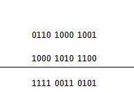
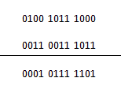

Excess 3 Code
Before discussing the BCD addition and subtraction using Excess 3 code we have to know what is Excess 3 code. It is a basically a binary code which is made by adding 3 with the equivalent decimal of a binary number and again converting it into binary number. So if we consider any binary number we have to first convert it into decimal number then add 3 with it and then convert it into binary and we will get the excess 3 equivalent of that number. Now we will see how BCD addition and subtraction can be done by this method.Excess 3 Code Addition
The operation of addition can be done by very simple method we will illustrate the operation in a simple way using steps.
Step 1
We have to convert the numbers (which are to be added) into excess 3 forms by adding 0011 with each of the four bit groups them or simply increasing them by 3.
Step 2
Now the two numbers are added using the basic laws of binary addition, there is no exception for this method.
Step 3
Now which of the four groups have produced a carry we have to add 0011 with them and subtract 0011 from the groups which have not produced a carry during the addition.
Step 4
The result which we have obtained after this operation is in Excess 3 form and this is our desired result
Example
To understand the Excess 3 Code Addition method better we can observe the method with the help of an example,
Let us take two numbers which we will to add.
0011 0101 0110 and 0101 0111 1001 are the two binary numbers. Now following the first step we take the excess 3 form of these two numbers which are 0110 1000 1001 and 1000 1010 1100, now these numbers are added following the basic rules of addition.

Now adding 0011 to the groups which produces a carry and subtracting zero from the groups which did not produced carry we get the result as 1100 0110 1000 is the result of the addition in excess 3 code and the BCD answer is 1001 0011 0101.
Excess 3 Code Subtraction
Similarly binary subtraction can be performed by Excess 3 Code Subtraction method. The operation is illustrated with the help of some steps.
Step 1
Like the previous method both the numbers have to be converted into excess 3 code
Step 2
Following the basic methods of binary subtraction, subtraction is done.
Step 3
Subtract ‘0011’ from each BCD four-bit group in the answer if the subtraction operation of the relevant four-bit groups required a borrow from the next higher adjacent four-bit group.
Step 4
Add ‘0011’ to the remaining four-bit groups, if any, in the result.
Step 5
Finally we get the desired result in excess 3 code
Example
Again an example will make the understanding very easy for us.
Let us take the numbers
0001 1000 0101 and 0000 0000 1000 now the excess 3 equivalent of those numbers are 0100 1011 1000 and 0011 0011 1011
Now performing the operation of binary subtraction we get

Now in the above mentioned operation the least significant column which needed a borrow and the other two columns did not need borrow. Now we have to subtract 0011 from the result of this column and add 0011 to the other two columns, we get 0100 1010 1010. This is the result expressed in excess 3 codes. And the binary result is 0001 0111 0111
 by
by